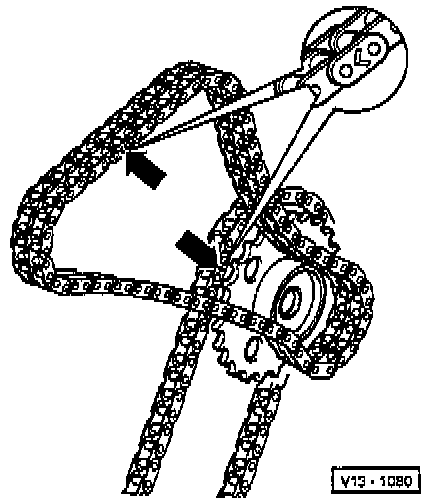

Timing Chain Guide: Service and Repair

LEGEND
1 Camshaft Sprocket For Double Chain
2 Sensor Wheel
3 Camshaft Sprocket Bolt
4 Pivot Pin
5 Seal
6 Chain Tensioner For Double Chain
7 Tensioning Plate For Double Chain
8 Sprocket For Single Chain
9 Double Chain
10 Intermediate Shaft Sprocket Bolt
11 Sprocket For Double Chain
12 Tensioner Rail Bolt
13 Chain Tensioner Rail With Tensioning Plate For Single Chain
14 Crankshaft Sprocket
15 Single Chain
16 Guide Rail For Single Chain
17 Locating Pin Without Collar
18 Locating Pin Without Collar
19 Guide Rail Bolt
20 Guide Rail Bolt
21 Guide Rail For Double Chain
22 Bolt
23 Thrust Washer
24 Intermediate Shaft
NOTE: During removal and installation procedures, refer to the component location illustration above and component notes below.
COMPONENT NOTES
Camshaft Sprocket For Double Chain (1)
- Removing and installing, refer to Camshaft, Lifters and Pushrods.
Sensor Wheel (2)
- For camshaft Position Sensor.
- Contact surface of timing chain and sensor wheel must be dry when installing.
- Removing and installing, refer to Camshaft, Lifters and Pushrods.
Camshaft Sprocket Bolt (3)
- Tighten to: 100 Nm (74 ft. lbs.).
- To remove and install counter-hold with 24 mm open jaw wrench on camshaft.
- Oil the bolt head contact surface when installing.
Pivot Pin (4)
- Tighten to: 25 Nm (18 ft. lbs.)..
Seal (5)
- Always replace.
Chain Tensioner For Double Chain (6)
- Bleed before installing as follows:

- Push a piece of wire (0 0.8 mm) through the hole of the pressure piston (arrow) up to ball valve and press pressure piston and housing together onto stop.
NOTE: If the pressure piston moves out again, repeat bleeding procedure.
- Only rotate engine with tensioner installed.
Sprocket For Single Chain (8)
- Refer to timing chain adjustment found under Timing Components.
Double Chain (9)

- Mark single and double chains before removing them (paint or mark an arrow pointing in direction of normal engine rotation).
NOTE: Do not mark the chain using a center punch or with any method that scratches or deforms the metal surfaces.
- Refer to timing chain adjustment found under Timing Components.
Intermediate Shaft Sprocket Bolt (10)
- Tighten to: 100 Nm (74 ft. lbs.).
Sprocket For Double Chain (11)
- Refer to timing chain adjustment found under Timing Components.
Tensioner Rail Bolt (12)
- Tighten to: 10 Nm (7 ft. lbs.).
Chain Tensioner Rail With Tensioning Plate For Single Chain (13)
- Before installing, release locking splice in chain tensioner with a small screwdriver and press tensioning plate against chain tensioner.
- Only rotate engine with chain tensioner installed.
Crankshaft Sprocket (14)
- Integral part of crankshaft.
- Ground down tooth aligned with main bearing joint = TDC for No. 1 Cyl.
- Refer to timing chain adjustment found under Timing Components.
Single Chain (15)
- Mark direction of rotation before removing (installation position).
- Refer to timing chain adjustment found under Timing Components.
Guide Rail For Single Chain (16)
- Remove together with single chain.
- Refer to timing chain adjustment found under Timing Components.
Locating Pin Without Collar (17)
- Tighten to: 25 Nm (18 ft. lbs.).
- For guide rail (item 16).
Locating Pin With Collar (18)
- Tighten to: 25 Nm (18 ft. lbs.).
- For guide rail (item 21).
Guide Rail Bolt (19)
- Use thread lock fluid D6, or equivalent.
- Tighten to: 20 Nm (15 ft. lbs.).
Guide Rail Bolt (20)
- Tighten to: 20 Nm (15 ft. lbs.).
Bolt (22)
- Use thread lock fluid D6, or equivalent.
- Tighten to: 20 Nm (15 ft. lbs.).